Chapter 4 Graphing using ggplot2
library(ggplot2) # my favorite graphing system
library(dplyr) # data frame manipulationsThere are three major “systems” of making graphs in R. The basic plotting commands in R are quite effective but the commands do not have a way of being combined in easy ways. Lattice graphics (which the mosaic package uses) makes it possible to create some quite complicated graphs but it is very difficult to do make non-standard graphs. The last package, ggplot2 tries to not anticipate what the user wants to do, but rather provide the mechanisms for pulling together different graphical concepts and the user gets to decide which elements to combine.
To make the most of ggplot2 it is important to wrap your mind around “The Grammar of Graphics”. Briefly, the act of building a graph can be broken down into three steps.
Define what data we are using.
What is the major relationship we wish to examine?
In what way should we present that relationship? These relationships can be presented in multiple ways, and the process of creating a good graph relies on building layers upon layers of information. For example, we might start with printing the raw data and then overlay a regression line over the top.
Next, it should be noted that ggplot2 is designed to act on data frames. It is actually hard to just draw three data points and for simple graphs it might be easier to use the base graphing system in R. However for any real data analysis project, the data will already be in a data frame and this is not an annoyance.
These notes are sufficient for creating simple graphs using ggplot2, but are not intended to be exhaustive. There are many places online to get help with ggplot2. One very nice resource is the website, http://www.cookbook-r.com/Graphs/, which gives much of the information available in the book R Graphics Cookbook which I highly recommend. Second is just googling your problems and see what you can find on websites such as StackExchange.
One way that ggplot2 makes it easy to form very complicated graphs is that it provides a large number of basic building blocks that, when stacked upon each other, can produce extremely complicated graphs. A full list is available at http://docs.ggplot2.org/current/ but the following list gives some idea of different building blocks. These different geometries are different ways to display the relationship between variables and can be combined in many interesting ways.
| Geom | Description | Required Aesthetics |
|---|---|---|
geom_histogram |
A histogram | x |
geom_bar |
A barplot | x |
geom_density |
A density plot of data. (smoothed histogram) | x |
geom_boxplot |
Boxplots | x, y |
geom_line |
Draw a line (after sorting x-values) | x, y |
geom_path |
Draw a line (without sorting x-values) | x, y |
geom_point |
Draw points (for a scatterplot) | x, y |
geom_smooth |
Add a ribbon that summarizes a scatterplot | x, y |
geom_ribbon |
Enclose a region, and color the interior | ymin, ymax |
geom_errorbar |
Error bars | ymin, ymax |
geom_text |
Add text to a graph | x, y, label |
geom_label |
Add text to a graph | x, y, label |
geom_tile |
Create Heat map | x, y, fill |
A graph can be built up layer by layer, where:
- Each layer corresponds to a
geom, each of which requires a dataset and a mapping between an aesthetic and a column of the data set.- If you don’t specify either, then the layer inherits everything defined in the
ggplot()command. - You can have different datasets for each layer!
- If you don’t specify either, then the layer inherits everything defined in the
- Layers can be added with a
+, or you can define two plots and add them together (second one over-writes anything that conflicts).
4.1 Basic Graphs
4.1.1 Bar Charts
Bar charts and histograms are how we think about displaying informtion about a single covariate. That is to say, we are not trying to make a graph of the relationship between \(x\) and \(y\), but rather understanding what values of \(x\) are present and how frequently they show up.
For displaying a categorical variable on the x-axis, a bar chart is a good option. Here we consider a data set that gives the fuel efficiency of different classes of vehicles in two different years. This is a subset of data that the EPA makes available on http://fueleconomy.gov. It contains only model which had a new release every year between 1999 and 2008 and therefore represents the most popular cars sold in the US. It includes information for each model for years 1999 and 2008. The dataset is included in the ggplot2 package as mpg.
data(mpg, package='ggplot2') # load the dataset
str(mpg)## Classes 'tbl_df', 'tbl' and 'data.frame': 234 obs. of 11 variables:
## $ manufacturer: chr "audi" "audi" "audi" "audi" ...
## $ model : chr "a4" "a4" "a4" "a4" ...
## $ displ : num 1.8 1.8 2 2 2.8 2.8 3.1 1.8 1.8 2 ...
## $ year : int 1999 1999 2008 2008 1999 1999 2008 1999 1999 2008 ...
## $ cyl : int 4 4 4 4 6 6 6 4 4 4 ...
## $ trans : chr "auto(l5)" "manual(m5)" "manual(m6)" "auto(av)" ...
## $ drv : chr "f" "f" "f" "f" ...
## $ cty : int 18 21 20 21 16 18 18 18 16 20 ...
## $ hwy : int 29 29 31 30 26 26 27 26 25 28 ...
## $ fl : chr "p" "p" "p" "p" ...
## $ class : chr "compact" "compact" "compact" "compact" ...First we could summarize the data by how many models there are in the different classes.
ggplot(data=mpg, aes(x=class)) +
geom_bar()
The data set we wish to use is specified using
data=mpg. This is the first argument defined in the function, so you could skip thedata=part if the input data.frame is the first argument.The column in the data that we wish to investigate is defined in the
aes(x=class)part. This means the x-axis will be the car’s class, which is indicated by the column namedclass.The way we want to display this information is using a bar chart.
By default, the geom_bar() just counts the number of cases and displays how many observations were in each factor level. If I have a data frame that I have already summarized, geom_col will allow you to set the height of the bar by a \(y\) column.
4.1.2 Histograms
Histograms perform a similar task as a bar graph, but with continuous numerical data. It focuses on a single variable and gives how frequently particular ranges of the data occur.
ggplot(mpg, aes(x=hwy)) +
geom_histogram()## `stat_bin()` using `bins = 30`. Pick better value with `binwidth`.
Just as geom_bar by default calculated the number of observations in each level of my factor of interest, geom_histogram breaks up the x-axis into distinct bins (by default, 30 bins), and then counts how many observations fall into each bin, and displys the number as a bar. To change the number of bins, we could either tell it the number of bins (e.g. bins=20) or the width of each bin (e.g. binwidth=4).
ggplot(mpg, aes(x=hwy)) +
geom_histogram(bins=8) # 8 bins
Often we want to rescale the y-axis so that it is in terms of density, which is \[density=\frac{\#\;observations\;in\;bin}{total\;number\;observations}\cdot\frac{1}{bin\;width}\]
To ask geom_histogram to calculate the density instead of counts, we simply add an option to the aes() list that specifies that the y-axis should be the density. Notice that this only rescales the y-axis and the shape of the histogram is identical.
ggplot(mpg, aes(x=hwy, y=..density..)) +
geom_histogram(bins=8) # 8 bins
4.1.3 Scatterplots
To start with, we’ll make a very simple scatterplot using the iris dataset. Recall that the iris dataset contains observations on 150 iris plants where we’ve measured the length and width of the petals and sepals. We will make a scatterplot of Sepal.Length versus Petal.Length, which are two columns in the dataset.
data(iris) # load the iris dataset that comes with R
str(iris) # what columns do we have to play with...## 'data.frame': 150 obs. of 5 variables:
## $ Sepal.Length: num 5.1 4.9 4.7 4.6 5 5.4 4.6 5 4.4 4.9 ...
## $ Sepal.Width : num 3.5 3 3.2 3.1 3.6 3.9 3.4 3.4 2.9 3.1 ...
## $ Petal.Length: num 1.4 1.4 1.3 1.5 1.4 1.7 1.4 1.5 1.4 1.5 ...
## $ Petal.Width : num 0.2 0.2 0.2 0.2 0.2 0.4 0.3 0.2 0.2 0.1 ...
## $ Species : Factor w/ 3 levels "setosa","versicolor",..: 1 1 1 1 1 1 1 1 1 1 ...ggplot( data=iris, aes(x=Sepal.Length, y=Petal.Length) ) +
geom_point( )
The data set we wish to use is specified using
data=iris.The relationship we want to explore is
x=Sepal.Lengthandy=Petal.Length. This means the x-axis will be the Sepal Length and the y-axis will be the Petal Length.The way we want to display this relationship is through graphing 1 point for every observation.
We can define other attributes that might reflect other aspects of the data. For example, we might want for the color of the data point to change dynamically based on the species of iris.
ggplot( data=iris, aes(x=Sepal.Length, y=Petal.Length, color=Species) ) +
geom_point( )
The aes() command inside the previous section of code is quite mysterious. The way to think about the aes() is that it gives you a way to define relationships that are data dependent. In the previous graph, the x-value and y-value for each point was defined dynamically by the data, as was the color. If we just wanted all the data points to be colored blue and larger, then the following code would do that
ggplot( data=iris, aes(x=Sepal.Length, y=Petal.Length) ) +
geom_point( color='blue', size=4 )
The important part isn’t that color and size were defined in the geom_point() but that they were defined outside of an aes() function!
Anything set inside an
aes()command will be of the formattribute=Column_Nameand will change based on the data.Anything set outside an
aes()command will be in the formattribute=valueand will be fixed.
4.1.4 Box Plots
Boxplots are a common way to show a categorical variable on the x-axis and continuous on the y-axis.
ggplot(mpg, aes(x=class, y=hwy)) +
geom_boxplot()
The boxes show the \(25^{th}\), \(50^{th}\), and \(75^{th}\) percentile and the lines coming off the box extend to the smallest and largest non-outlier observation.
4.1.5 Labels
To make a graph more understandable, it is necessary to tweak labels for the axes and add a main title and such. Here we’ll adjust labels in a graph, including the legend labels.
# Treat the number of cylinders in a car as a categorical variable (4,6 or 8)
mtcars$cyl <- factor(mtcars$cyl)
ggplot(mtcars, aes(x=wt, y=mpg, col=cyl)) +
geom_point() +
labs( title='Weight vs Miles per Gallon') +
labs( x="Weight in tons (2000 lbs)", y="Miles per Gallon (US)" ) +
labs( color="Cylinders") 
You could either call the labs() command repeatedly with each label, or you could provide multiple arguements to just one labs() call.
4.1.6 Color Scales
Adjusting the color palette for the color scales is not particularly hard, but it isn’t intuitive. You can either set them up using a set of predefined palettes or you can straight up pick the colors. Furthermore we need to recognize that picking colors for a continuous covariate is different than for a factor. In the continuous case, we have to pick a low and high colors and ggplot will smoothly transition between the two. In the discrete case with a factor, each factor level gets its own color.
To make these choices, we will use the functions that modify the scales. In particular, if we are modifying the color aesthetic, we will use the scale_color_XXX functions where the XXX gets replaced by something more specific. If we are modifying the fill colors, then we will use the scale_fill_XXX family of functions.
4.1.6.1 Colors for Factors
We can set the colors manually using the function scale_color_manual which expects the name of the colors for each factor level. The order given in the values argument corresponds to the order of the levels of the factor.
For a nice list of the named colors you can use, I like to refer to this webpage: https://www.nceas.ucsb.edu/~frazier/RSpatialGuides/colorPaletteCheatsheet.pdf
ggplot(iris, aes(x=Sepal.Width, y=Sepal.Length, color=Species)) +
geom_point() +
scale_color_manual(values=c('blue', 'darkmagenta', 'aquamarine'))
If you want to instead pick a color palette and let the palette pick the colors to be farthest apart based on the number of factor levels, you can use scale_color_manual and then have the values chosen by one of the palette functions where you just have to tell it how many levels you have.
library(colorspace) # these two packages have some decent
library(grDevices) # color palettes functions.
rainbow(6) # if we have six factor levels, what colors should we use? ## [1] "#FF0000FF" "#FFFF00FF" "#00FF00FF" "#00FFFFFF" "#0000FFFF" "#FF00FFFF"ggplot(iris, aes(x=Sepal.Width, y=Sepal.Length, color=Species)) +
geom_point() +
scale_color_manual(values = rainbow(3))
4.1.6.2 Colors for continuous values
For this example, we will consider an elevation map of the Maunga Whau volcano in New Zealand. This dataset comes built into R as the matrix volcano, but I’ve modified it slightly and saved it to a package I have on github called dsdata
library(devtools)
install_github('dereksonderegger/dsdata')## Skipping install of 'dsData' from a github remote, the SHA1 (43b2f6d8) has not changed since last install.
## Use `force = TRUE` to force installationdata('Eden', package='dsData')ggplot( Eden, aes(x=x, y=y, fill=elevation)) +
geom_raster()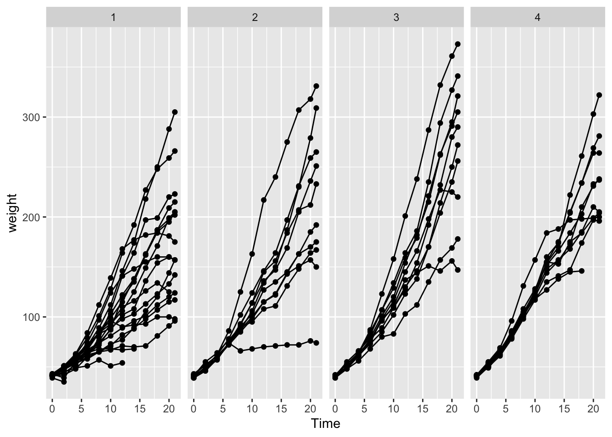
The default gradient isn’t too bad, but we might want to manually chose two colors to smoothly scale between. Because I want to effect the colors I’ve chosen for the fill aesthetic, I have to modify this using scale_fill_XXX
ggplot( Eden, aes(x=x, y=y, fill=elevation)) +
geom_tile() +
scale_fill_gradient(low = "red", high = "blue")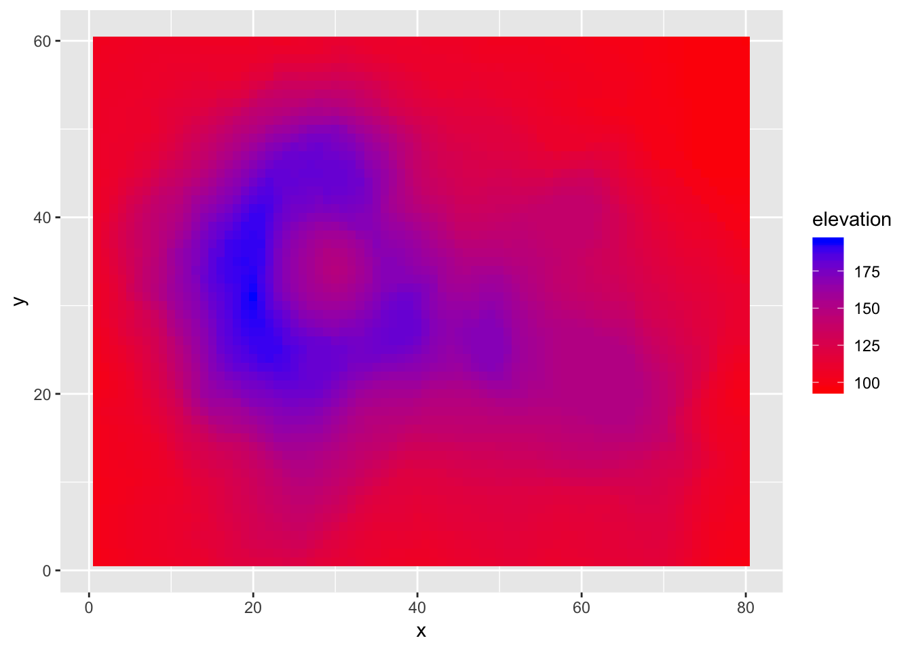
I think we ought to have the blue color come in a little earlier. Also, I want to specify a middle color so that our graph transitions from red to green to blue. To do this, we also have to specify where the middle color should be located along the elevation range.
ggplot( Eden, aes(x=x, y=y, fill=elevation)) +
geom_tile() +
scale_fill_gradient2(low = "red", mid='green', high = "blue",
midpoint=135)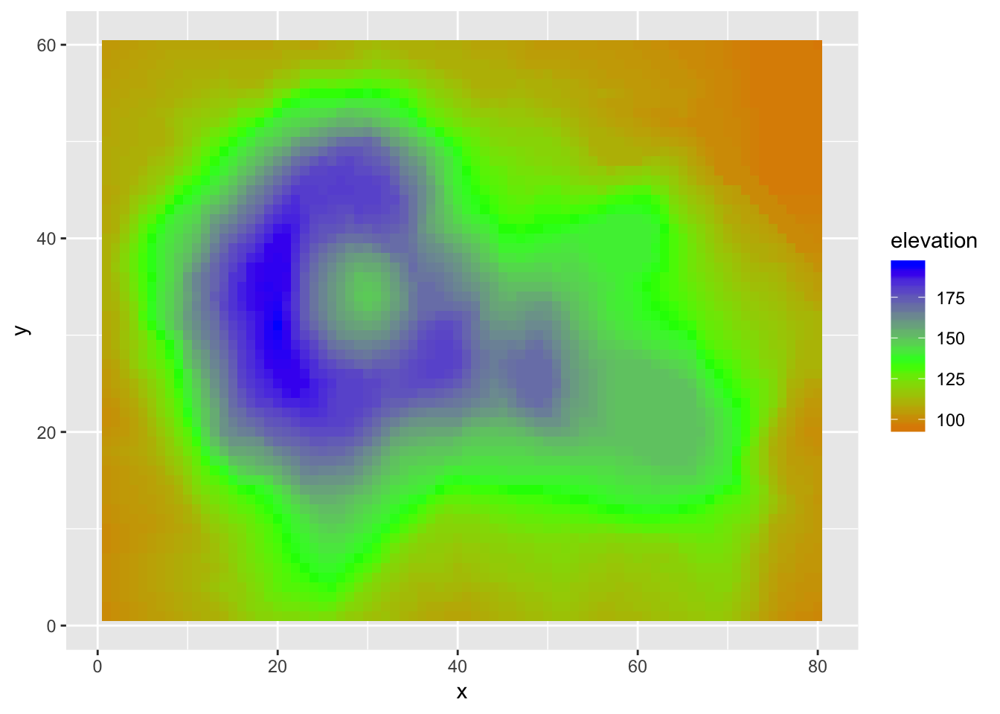
If we don’t want to specify the colors manually we can, as usual, specify the color palette. The gradientn functions allow us to specify a large numbers intermediate colors.
ggplot( Eden, aes(x=x, y=y, fill=elevation)) +
geom_tile() +
scale_fill_gradientn(colours = terrain.colors(5))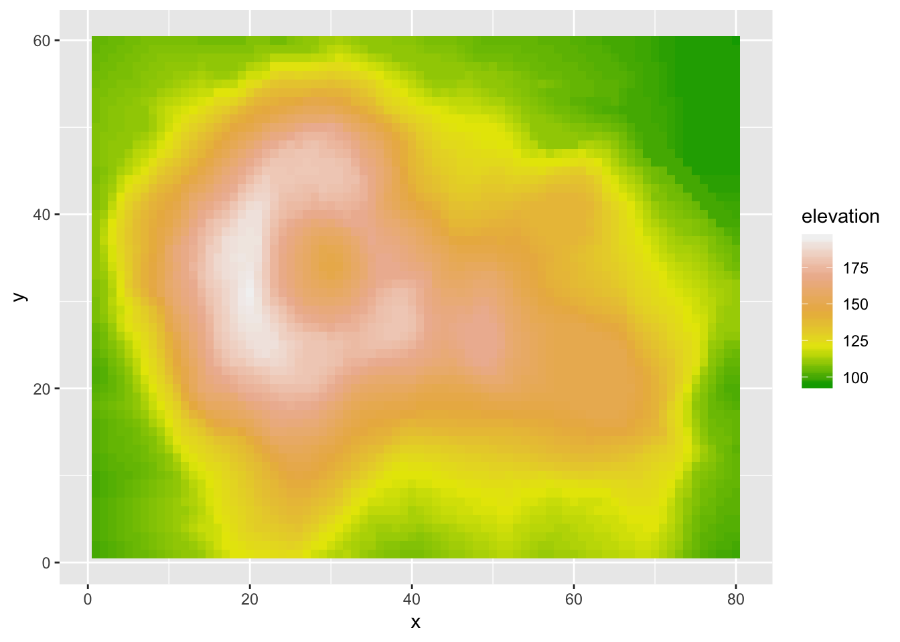
4.1.7 Adjusting axes
4.1.7.1 Setting breakpoints
Sometimes the default axis breakpoints aren’t quite what I want and I want to add a number or remove a number. To do this, we will modify the x or y scale. Typically I only have a problem when the axis is continuous, so we will concentrate on that case.
ggplot(mpg, aes(x=class, y=hwy)) +
geom_boxplot() 
In this case, suppose that we want the major breakpoints (which have labels) to occur every 5 mpg, and the minor breakpoints (which just have a white line) to occur midway between those (so every 2.5 mpg).
ggplot(mpg, aes(x=class, y=hwy)) +
geom_boxplot() +
scale_y_continuous( breaks = seq(10, 45, by=5) ) If we wanted to adjust the minor breaks, we could do that using the minor_breaks argument. If we want to remove the minor breaks completely, we could set the minor breaks to be NULL
ggplot(mpg, aes(x=class, y=hwy)) +
geom_boxplot() +
scale_y_continuous( breaks = seq(10, 45, by=5), minor_breaks = NULL ) 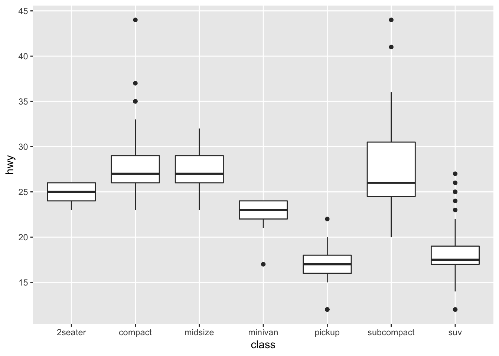
4.1.8 Zooming in/out
It is often important to be able to force the graph to have a particular range in either the x-axis or the y-axis. Given a particular range of interest, there are two ways that we could this:
- Remove all data points that fall outside the range and just plot the reduced dataset. This is accomplished using the
xlim()andylim()functions, or setting either of those inside anotherscale_XXXfunction. - Use all the data to create a graph and just zoom in/out in that graph. This is accomplished using the
coord_cartesian()function
ggplot(trees, aes(x=Girth, y=Volume)) +
geom_point() +
geom_smooth(method='lm')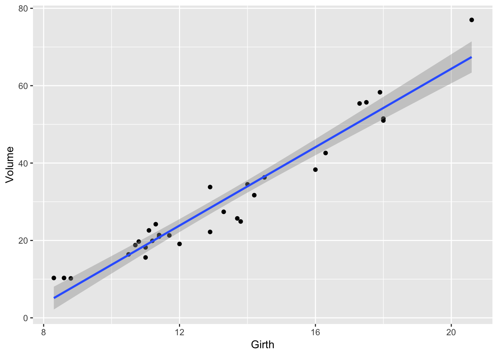
If we want to reset the x-axis to stop at \(x=19\), and \(y=60\), then we could use the xlim() and ylim() functions, but this will cause the regression line to be chopped off and it won’t even use that data point when calculating the regression.
# Danger! This removes the data points first!
ggplot(trees, aes(x=Girth, y=Volume)) +
geom_point() +
geom_smooth(method='lm') +
xlim( 8, 19 ) + ylim(0, 60)## Warning: Removed 1 rows containing non-finite values (stat_smooth).## Warning: Removed 1 rows containing missing values (geom_point).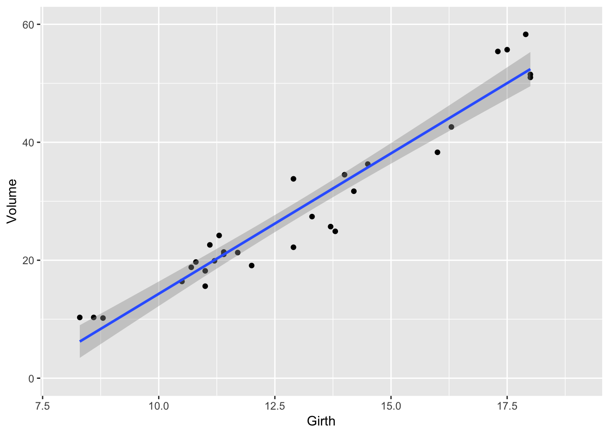
Alternatively, we could use the coord_cartesion function to chop the axes _after_everything has been calculated.
# Safer! Create the graph and then just zoom in
ggplot(trees, aes(x=Girth, y=Volume)) +
geom_point() +
geom_smooth(method='lm') +
coord_cartesian( xlim=c(8, 19 ), ylim=c(0, 60))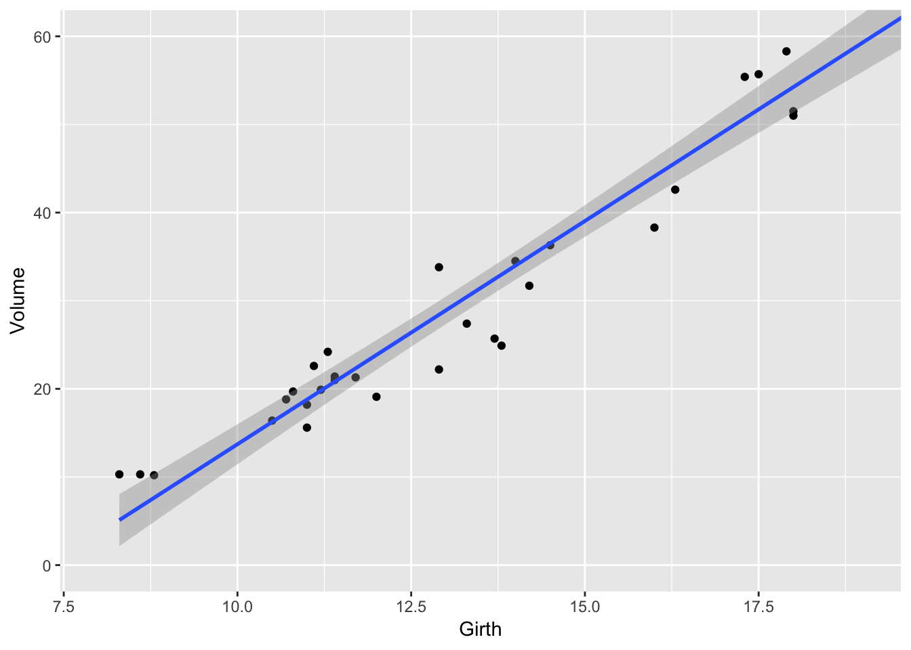
4.2 Cookbook Examples
4.2.1 Scatterplot with prediction ribbons
Often I want to create a scatterplot and then graph the predicted values as a ribbon on top. While it is possible to do this automatically using the geom_smoother() function, I prefer not to do this because I don’t have much control over how the model is created.
# fit a linear model to the trees dataset
model <- lm( Volume ~ Girth, data=trees )
# add the fitted values and confidence interval values for each observation
# to the original data frame, and call the augmented dataset trees.aug.
trees.aug <- trees %>% cbind( predict(model, interval='confidence', newdata=.) )
# Plot the augmented data. Alpha is the opacity of the ribbon
ggplot(trees.aug, aes(x=Girth, y=Volume)) +
geom_ribbon( aes(ymin=lwr, ymax=upr), alpha=.4, fill='darkgrey' ) +
geom_line( aes(y=fit) ) +
geom_point( aes( y = Volume ) )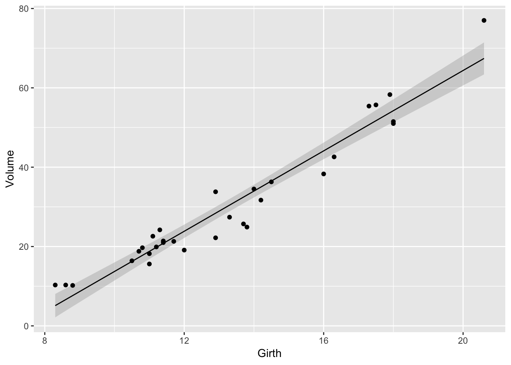
4.2.2 Bar Plot
Suppose that you just want make some barplots and add \(\pm\) S.E. bars. This should be really easy to do, but in the base graphics in R, it is a pain. Fortunately in ggplot2 this is easy. First, define a data frame with the bar heights you want to graph and the \(\pm\) values you wish to use.
# Calculate the mean and sd of the Petal Widths for each species
stats <- iris %>%
group_by(Species) %>%
summarize( Mean = mean(Petal.Width), # Mean = ybar
StdErr = sd(Petal.Width)/sqrt(n()) ) %>% # StdErr = s / sqrt(n)
mutate( lwr = Mean - StdErr,
upr = Mean + StdErr )
stats## # A tibble: 3 x 5
## Species Mean StdErr lwr upr
## <fct> <dbl> <dbl> <dbl> <dbl>
## 1 setosa 0.246 0.0149 0.231 0.261
## 2 versicolor 1.33 0.0280 1.30 1.35
## 3 virginica 2.03 0.0388 1.99 2.06Next we take these summary statistics and define the following graph which makes a bar graph of the means and error bars that are \(\pm\) 1 estimated standard deviation of the mean (usually referred to as the standard errors of the means). By default, geom_bar() tries to draw a bar plot based on how many observations each group has. What I want, though, is to draw bars of the height I specified, so to do that I have to add stat='identity' to specify that it should just use the heights I tell it.
ggplot(stats, aes(x=Species)) +
geom_bar( aes(y=Mean), stat='identity') +
geom_errorbar( aes(ymin=lwr, ymax=upr) )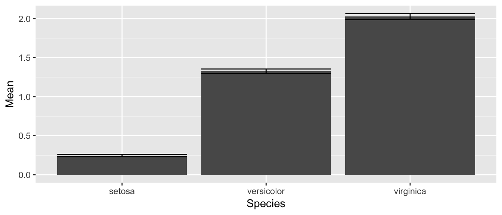
While this isn’t too bad, we would like to make this a bit more pleasing to look at. Each of the bars is a little too wide and the error bars should be a tad narrower than then bar. Also, the fill color for the bars is too dark. So I’ll change all of these, by setting those attributes outside of an aes() command.
ggplot(stats, aes(x=Species)) +
geom_bar( aes(y=Mean), stat='identity', fill='grey', width=.6) +
geom_errorbar( aes(ymin=lwr, ymax=upr), color='red', width=.4 )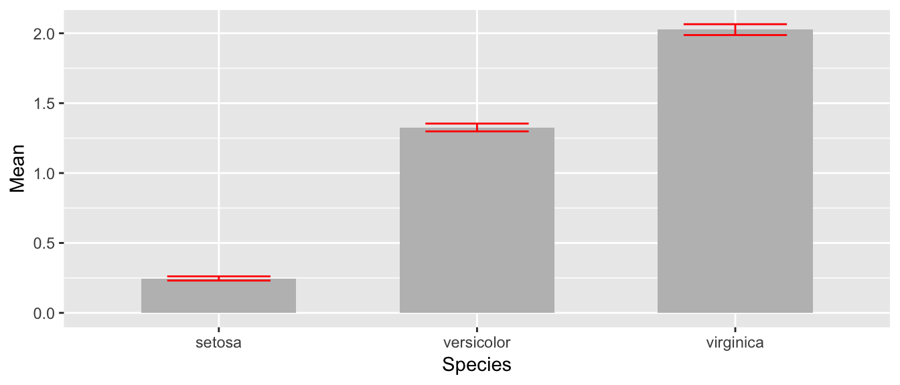
The last thing to notice is that the order in which the different layers matter. This is similar to Photoshop or GIS software where the layers added last can obscure prior layers. In the graph below, the lower part of the error bar is obscured by the grey bar.
ggplot(stats, aes(x=Species)) +
geom_errorbar( aes(ymin=lwr, ymax=upr), color='red', width=.4 ) +
geom_bar( aes(y=Mean), stat='identity', fill='grey', width=.6)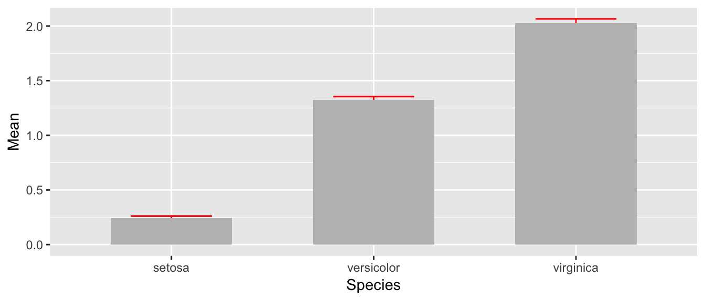
4.3 Exercises
For the dataset trees, which should already be pre-loaded. Look at the help file using
?treesfor more information about this data set. We wish to build a scatterplot that compares the height and girth of these cherry trees to the volume of lumber that was produced.- Create a graph using ggplot2 with Height on the x-axis, Volume on the y-axis, and Girth as the either the size of the data point or the color of the data point. Which do you think is a more intuitive representation?
- Add appropriate labels for the main title and the x and y axes.
Consider the following small dataset that represents the number of times per day my wife played “Ring around the Rosy” with my daughter relative to the number of days since she has learned this game. The column
yhatrepresents the best fitting line through the data, andlwranduprrepresent a 95% confidence interval for the predicted value on that day.Rosy <- data.frame( times = c(15, 11, 9, 12, 5, 2, 3), day = 1:7, yhat = c(14.36, 12.29, 10.21, 8.14, 6.07, 4.00, 1.93), lwr = c( 9.54, 8.5, 7.22, 5.47, 3.08, 0.22, -2.89), upr = c(19.18, 16.07, 13.2, 10.82, 9.06, 7.78, 6.75))Using
ggplot()andgeom_point(), create a scatterplot withdayalong the x-axis andtimesalong the y-axis.Add a line to the graph where the x-values are the
dayvalues but now the y-values are the predicted values which we’ve calledyhat. Notice that you have to set the aesthetic y=times for the points and y=yhat for the line. Because eachgeom_will accept anaes()command, you can specify theyattribute to be different for different layers of the graph.Add a ribbon that represents the confidence region of the regression line. The
geom_ribbon()function requires anx,ymin, andymaxcolumns to be defined. For examples of usinggeom_ribbon()see the online documentation: http://docs.ggplot2.org/current/geom_ribbon.html.ggplot(Rosy, aes(x=day)) + geom_point(aes(y=times)) + geom_line( aes(y=yhat)) + geom_ribbon( aes(ymin=lwr, ymax=upr), fill='salmon')- What happened when you added the ribbon? Did some points get hidden? If so, why?
- Reorder the statements that created the graph so that the ribbon is on the bottom and the data points are on top and the regression line is visible.
- The color of the ribbon fill is ugly. Use Google to find a list of named colors available to
ggplot2. For example, I googled “ggplot2 named colors” and found the following link: http://sape.inf.usi.ch/quick-reference/ggplot2/colour. Choose a color for the fill that is pleasing to you. Add labels for the x-axis and y-axis that are appropriate along with a main title.
The R package
babynamescontains a single dataset that lists the number of children registered with Social Security with a particular name along with the proportion out of all children born in a given year. The dataset covers the from 1880 to the present. We want to plot the relative popularity of the names ‘Elise’ and ‘Casey’.Load the package. If it is not found on your computer, download the package from CRAN.
library(babynames) data("babynames")- Read the help file for the data set
babynamesto get a sense of the columns - Create a small dataset that only has the names ‘Elise’ and ‘Casey’.
Make a plot where the x-axis is the year and the y-axis is the proportion of babies given the names. Use a line to display this relationship and distinguish the two names by color. Notice this graph is a bit ugly because there is a lot of year-to-year variability that we should smooth over.
We’ll use
dplyrto collapse the individual years into decades using the following code:small <- babynames %>% filter( name=='Elise' | name=='Casey') %>% mutate( decade = cut(year, breaks = seq(1869,2019,by=10) )) %>% group_by(name, decade) %>% summarise( prop = mean(prop), year = min(year))- Now draw the same graph you had in part (d).
Next we’ll create an area plot where the height is the total proportion of the both names and the colors split up the proportion.
ggplot(small, aes(x=year, y=prop, fill=name)) + geom_area()This is a pretty neat graph as it show the relative popularity of the name over time and can easily be expanded to many many names. In fact, there is a wonderful website that takes this same data and allows you select the names quite nicely: http://www.babynamewizard.com/voyager. My wife and I used this a lot while figuring out what to name our children. Notice that this site really uses the same graph type we just built but there are a few extra neat interactivity tricks.